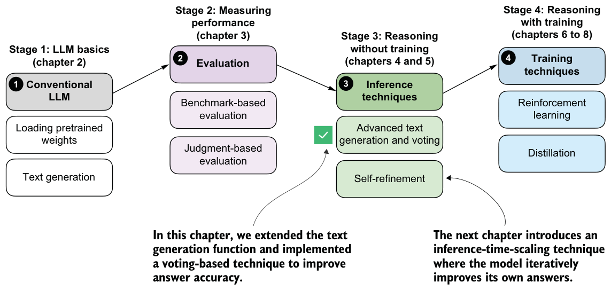
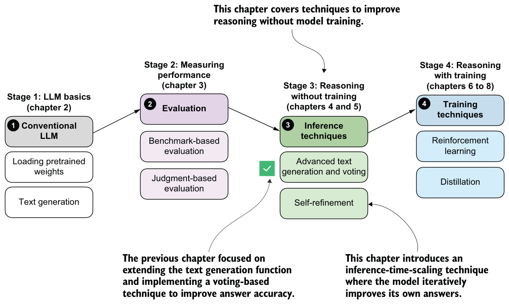
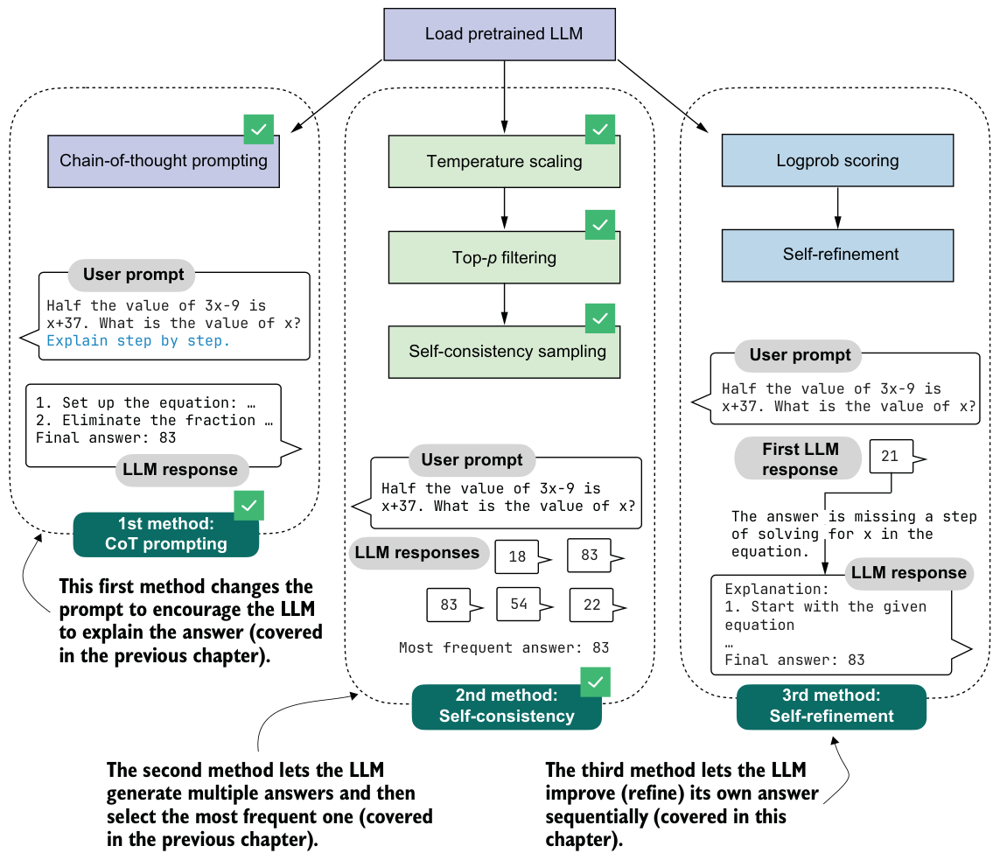
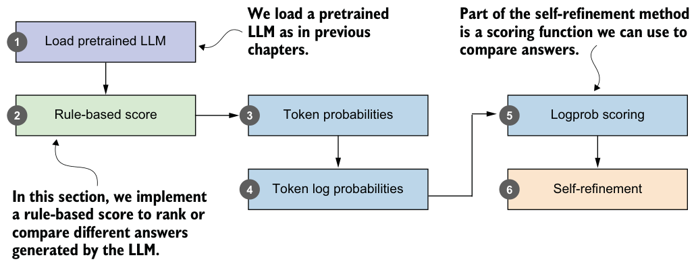

Summary
- Reasoning abilities and answer accuracy can be improved without retraining the model by increasing compute at inference time (inference-time scaling).
- A flexible text generation wrapper (
generate_text_stream_concat_flex) allows different sampling strategies to be plugged in without changing the surrounding code.
- Next tokens are produced from logits via softmax.
- Temperature scaling changes logits to control the diversity of the generated text. Top-p (nucleus) sampling filters out low-probability tokens to reduce the chance of generating nonsensical answers.
- Chain-of-thought prompting (such as “Explain step by step.”) often yields more accurate answers by encouraging the model to write out its intermediate reasoning, though it increases the number of generated tokens and, in turn, the runtime cost. Self-consistency sampling generates multiple answers, extracts the final boxed result from each, and selects the most frequent answer via majority vote to improve answer accuracy.
- Experiments on the MATH-500 dataset show that combining chain-of-thought prompting with self-consistency can substantially boost accuracy compared to the baseline without sampling, at the cost of much longer running times.
- The central tradeoff of inference-time scaling is higher accuracy in exchange for more compute.
Inference-time scaling via self-refinement
This chapter covers
- Scoring LLM answers with a simple rule-based scorer
- Computing an LLM’s confidence in its answers
- Coding a self-refinement loop where the LLM iteratively improves its answers
The previous chapter introduced the concept of inference-time scaling (inference scaling for short), which improves the accuracy of model responses without further training. In particular, it focused on self-consistency, where the model generates multiple answers, and the final answer is the most frequent one.
As outlined in figure 5.1, this chapter will move beyond self-consistency for inference scaling and cover another popular and useful inference-scaling technique, self-refinement. Instead of generating and choosing from multiple answers, self-refinement focuses on iteratively refining a single answer to correct potential mistakes.

5.1Scoring and iteratively improving model responses
As you’ve seen, inference scaling trades additional compute for better accuracy. We’ve covered two inference-scaling techniques so far: chain-of-thought prompting and self-consistency.
Chain-of-thought prompting, the first method illustrated in figure 5.2, modifies the prompt, such as by adding the phrase "Explain step by step.", which can trigger a base model to write longer explanations that can in turn improve answer accuracy. This method is particularly useful for base models that don’t naturally provide reasoning-like explanations. Models trained as reasoning models usually don’t benefit from this type of inference scaling because they already explain their answers.
Self-consistency, the second method in figure 5.2, lets the model produce several answers in parallel. We then choose the final answer by selecting the most frequent of these candidates.
Even though self-consistency is quite simple, it often yields large gains in answer accuracy, which is why it has become a common choice in LLM applications where accuracy is a higher priority than latency. Recent examples include DeepSeekMath-V2 and Google’s Gemini 3 Deep Think mode (see appendix A for references). One downside

of self-consistency is that selecting the most common answer requires short answers that can be compared.
In this chapter, we’ll implement a more versatile technique, self-refinement, in which the LLM learns to improve its own answers iteratively (method 3 in figure 5.2). Before we do so, though, we’ll first implement scoring functions to compare and rank different answers, as outlined in figure 5.3.
After loading the pretrained LLM, as in previous chapters (step 1 in figure 5.3), we’ll implement a simple rule-based scoring function to illustrate the concept of scoring (step 2). Then we’ll go over the concepts of token probabilities (step 3) and token log probabilities

(step 4), which we’ll need to implement the log-probability scoring (logprob scoring) method (step 5) for our self-refinement loop (step 6).
We will primarily use the logprob scoring function (step 5 in figure 5.3) to track progress within the self-refinement loop. These scoring functions can also be used to break ties in self-consistency or to select the best response instead of relying on a majority vote.
The overview in figure 5.3, leading up to self-refinement, looks relatively short and straightforward, but the topics of token probability and log probability are somewhat complex. These topics will also be relevant in the next chapter, where we’ll implement reinforcement learning methods to train the LLM. To that end, we’ll spend some time here discussing the concept of log-probability scoring.